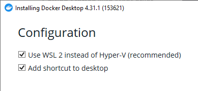
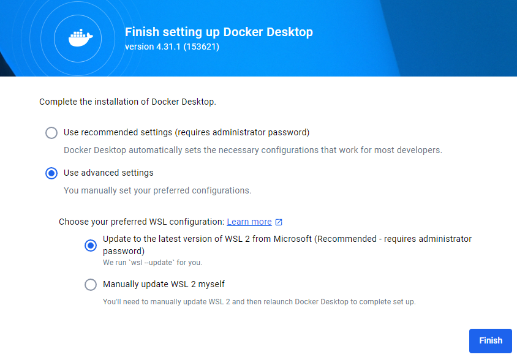

Workshop Environment Setup
In this workshop we use the following materials:
- Documentation - (like this page): the latest versions are available online here
- Exercises - download the latest zip file, unzip,
and find exercises in
workshop/exercises.
The first step is to download and unzip the main.zip file to a local folder on your system.
Alternatively, if you are familiar with git and have it installed you can fork/clone the GitHub repository of this
workshop directly from https://github.com/geographika/getting-started-with-mapserver/.
Text editor
Your text editor needs to be able to edit files in plain text. Below are some choices for text editors (there may be others):
- Notepad or Notepad++ (Windows)
- Sublime Text
- IntelliJ IDEA
- Emacs
- Visual Studio Code
vi/vim
Having said this, please feel free to use what works for you :)
Docker
The main requirement for the training is to install Docker with Docker Compose on your system. We strongly advise to install Docker before the workshop starts.
MapServer can be installed directly to various operating systems (see the documentation for more information), but Docker is used so a fully reproducible environment can be setup.
Docker Compose is an addition to Docker to facilitate
the orchestration (configuration) of one or more Docker 'Containers' (a Container is a running instance of a Docker image)
using a configuration convention (the Docker Compose YAML file), usually named docker-compose.yml.
Docker Installation
Docker installation has greatly progressed over the years. This is the only part of the workshop which is dependent on the system/OS you are running (e.g. Windows, Mac or Linux). For each system the Docker website provides detailed installation instructions. Please follow these consistently.
For many platforms a product called Docker Desktop is available, which includes Docker compose:
- Windows installation - install "Docker Desktop for Windows - x86_64"
- Mac installation
- Linux installation
Some installation notes for different operating systems:
Windows
- We recommend using the Windows Subsystem for Linux (WSL) as it also provides a powerful (Bash) command line and has optimal integration with Docker. You can choose this option when installing Docker:

When you first run Docker you can then update to the latest WSL version:

- If you get "WSL update failed" you may need to manually run
wsl --update - Admin access is likely required to install Docker. You may then need to add your local account to the docker-users group as explained here, and restart your machine.
Mac
- If you are using Homebrew, consider using the brew Docker formula
Linux
- You can choose the relevant installer for your platform. You can also use Virtualbox with a Ubuntu image or use a cloud VM
- Docker Desktop includes a graphical user interface with some interesting options. You can see logs and information about running containers, open their service in a browser or even open a terminal inside the container
OSGeoLive
The steps below are based on Install Docker Engine on Ubuntu and have been tested on the OSGeoLive 16.0 virtual machine.
# Add Docker's official GPG key:
sudo apt-get update
sudo apt-get install ca-certificates curl
sudo install -m 0755 -d /etc/apt/keyrings
sudo curl -fsSL https://download.docker.com/linux/ubuntu/gpg -o /etc/apt/keyrings/docker.asc
sudo chmod a+r /etc/apt/keyrings/docker.asc
# Add the repository to Apt sources:
echo \
"deb [arch=$(dpkg --print-architecture) signed-by=/etc/apt/keyrings/docker.asc] https://download.docker.com/linux/ubuntu \
$(. /etc/os-release && echo "$VERSION_CODENAME") stable" | \
sudo tee /etc/apt/sources.list.d/docker.list > /dev/null
sudo apt-get update
# Install the Docker packages
sudo apt-get install -y docker-ce docker-ce-cli containerd.io docker-buildx-plugin docker-compose-plugin
# Test with Docker test image
sudo service docker start
sudo docker run hello-world
# Setup the workshop
cd /home
sudo git clone https://github.com/geographika/getting-started-with-mapserver/
cd /home/getting-started-with-mapserver/workshop/exercises/
sudo docker compose up
# Test the following URLs in a browser
# http://localhost:7000
# http://localhost:7001/lines.html
Testing the Docker installation
If all goes well, you should be able to run Docker from the command line as follows:
docker --version
# Docker version 28.2.2, build e6534b4
docker compose version
# Docker Compose version v2.36.2-desktop.1
Your version numbers don't have to match those above exactly.
Quickstart
Once Docker is available on your system, running the workshop containers with MapServer and all required datasets is a one-liner.
# make sure you are in the directory that contains docker-compose.yml
cd /getting-started-with-mapserver/workshop/exercises/
# now start the containers
docker compose up --detach
The first time this command is run it will start downloading the containers - this may take several minutes depending on your Internet connection. On Windows you may be prompted to let Docker access ports through your Windows Firewall.
When this command is next run it should only take a few seconds to start. The detach flag means the containers will run in the background so we
can continue to use the shell. If you want to stop the containers you can run:
Once the containers are downloaded you can test they are running and you can connect to them. Open a web browser and navigate to http://localhost:7000/. You should see the following message:
loadParams(): Web application error. No query information to decode. QUERY_STRING is set, but empty.
This is good! It means MapServer is running. Next we can check that the front-end container is running by opening http://localhost:7001/points.html. Hopefully you'll see a map, and we're ready to start the workshop.
Possible Errors
- The error
error during connect: this error may indicate that the docker daemon is not runningindicates that the Docker service isn't running. You will need to start Docker. On Windows you can do this by opening Docker Desktop. If it is still failing try running it as Administrator. docker: Cannot connect to the Docker daemon at unix:///var/run/docker.sock. Is the docker daemon running?- the Docker service isn't running. Start it withsudo service docker start.E: Could not get lock /var/lib/dpkg/lock-frontend. It is held by process 46288 (unattended-upgr)is caused by another program trying to update Ubuntu. Rebooting may fix this, or you can try runningsudo kill <process_id>for example in this casesudo kill 46288.docker-desktop : Depends: docker-ce-cli but it is not installable- you are attempting to install Docker Desktop, but have not yet installed the Docker Engine.unable to get image 'node:lts-slim': error during connect: in the default daemon configuration on Windows, the docker client must be run with elevated privileges to connect: Get "http://%2F%2F.%2Fpipe%2Fdocker_engine/v1.50/images/node:lts-slim/json": open //./pipe/docker_engine: The system cannot find the file specified.- you will need